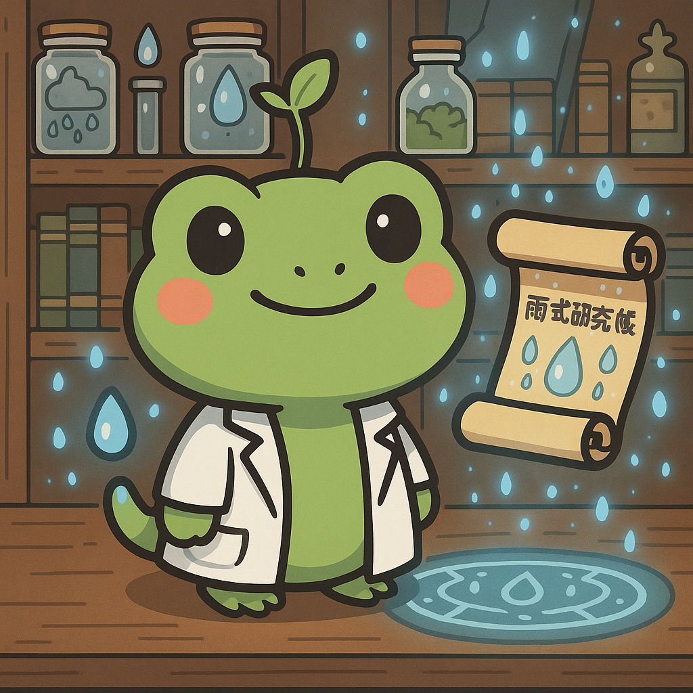
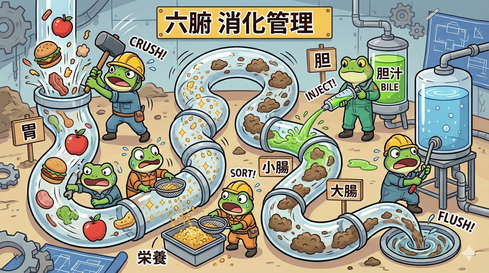

こんにちは、ほぐしや きだです。
前回はエリート集団「五臓（ごぞう）」について学びましたが、今回はその相棒、「六腑（ろっぷ）」のお話です。
「五臓が社長なら、六腑は現場の職人。」
彼らがサボると、体はゴミ（老廃物）だらけになってしまいます。
今日はヘビ博士の紹介で、現場を一番よく知る「カエル親方」に来てもらいました。
1. 六腑の仕事は「通すこと」

任せろケロ！
六腑（胆・小腸・胃・大腸・膀胱・三焦）の共通点は、「中身が空洞」であること。
食べ物や水分を一時的に受け取り、栄養とゴミに分け、不要なものを次へと送り出す「パイプライン」です。

見てください、この見事な連携！
胃が砕き、小腸が分け、大腸が運び、膀胱が流す。この流れがスムーズなら、私たちは元気にご飯が食べられます。
2. 個性豊かな6つの現場
🍔 胃（い）
【受納・腐熟】
食べ物を受け取り、ドロドロのおかゆ状にする「ミキサー」。ここが弱いと食欲が落ちる。
🧪 胆（たん）
【決断・貯蔵】
胆汁を貯めるだけでなく、「決断力」を司る特殊な腑。「胆力がある」の語源。
🍝 小腸（しょうちょう）
【清濁泌別】
ドロドロになった物から「栄養（清）」と「カス（濁）」を分ける「選別マシーン」。
💩 大腸（だいちょう）
【伝導】
カスの水分を吸い取り、便を作って送り出すベルトコンベア。
🚽 膀胱（ぼうこう）
【貯尿・排尿】
不要な水分を一時的に溜めて、気化（エネルギー）の力で外に出すダム。
🔥 三焦（さんしょう）
【水路・気化】
形のない「名誉現場監督」。全身の水と気の通り道を管理している。
3. 詰まるとどうなる？
パイプは「流れてこそ」じゃ！
食べ過ぎやストレスでこの流れが止まると、ゴミが溜まって腐敗するケロ。
それが「便秘」や「胃もたれ」、そして「肌荒れ」の原因になるんじゃよ。
「出す力」こそが、最強のデトックスなんじゃ！
五臓（社長）が指示を出し、
六腑（現場）が汗を流す。
このチームワークが健康の鍵。
自分の体の中で、現場の職人さんたちがスムーズに働けるように、暴飲暴食という「ブラック労働」はほどほどにしましょうね。